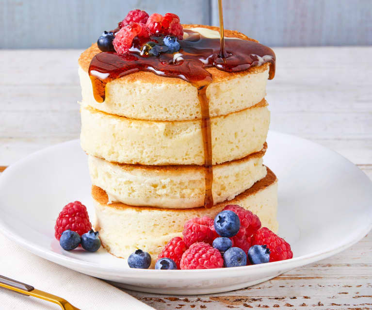

Pancakes

Description
A pancake is a flat cake, often thin and round, prepared from a starch-based batter that may contain eggs,
milk and butter and cooked on a hot surface such as a griddle or frying pan, often frying with oil or butter.
It is a type of batter bread.
Ingredients
- eggs
- flour
- milk
- butter
- sugar
Steps
- In a large bowl, mix flour, sugar, baking powder and salt
- Make a well in the center, and pour in milk, egg and oil
- Mix until smooth
- Heat a lightly oiled griddle or frying pan over medium high heat
- Pour or scoop the batter onto the griddle, using approximately 1/4 cup for each pancake
- Brown on both sides and serve hot
ENJOY!